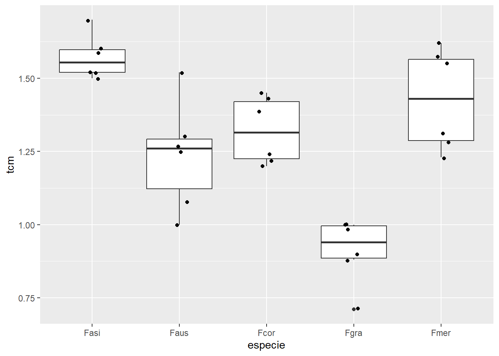
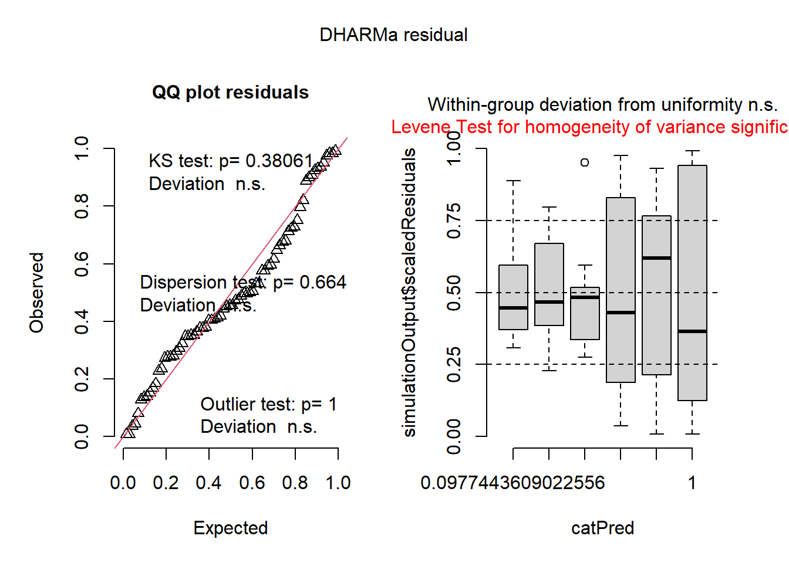
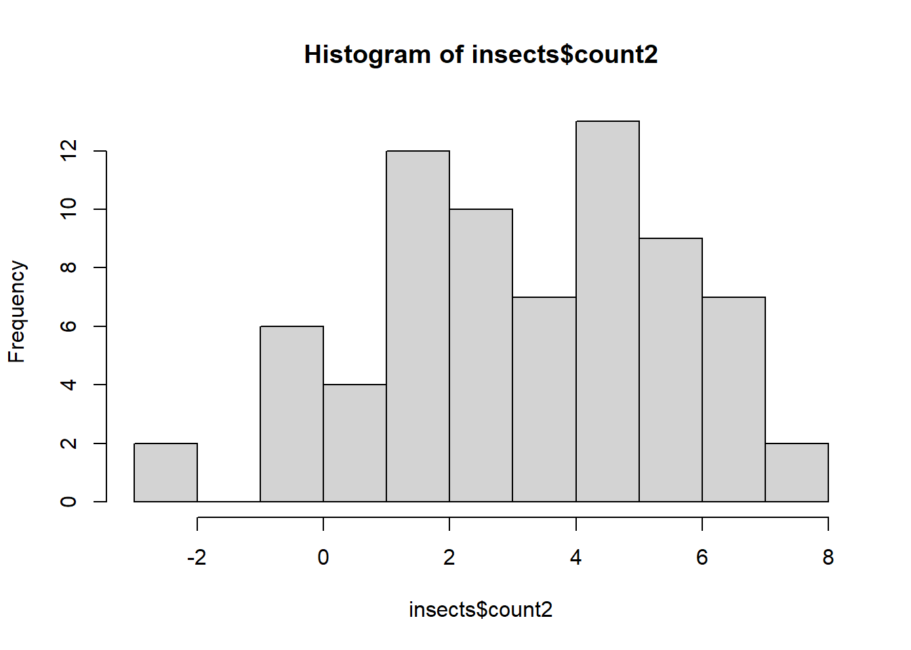

library(gsheet) # Importa planilhas do Google Sheets
library(tidyverse) # Manipulação de dados, ggplot2, dplyr, etc.
library(ggplot2) # Gráficos (pode vir via tidyverse)
library(emmeans) # Médias ajustadas e comparações múltiplas (Tukey)
library(multcomp) # Agrupamento de médias por letras (cld)
library(multcompView) # Suporte para cld com letras
library(car) # Anova para modelos glm, testes
library(MASS) # Box-Cox, transformações
library(DHARMa) # Diagnóstico visual de resíduos, modelos
library(rstatix) # Testes não paramétricos, Kruskal-Wallis, Levene
library(agricolae) # Comparações múltiplas não paramétricas
library(performance) # check_model para diagnóstico de modelosanova
ANOVA (Análise de Variância)
A Análise de Variância (ANOVA) é um teste estatístico paramétrico projetado para comparar as médias de três ou mais grupos independentes. Sua principal finalidade é determinar se existem diferenças estatisticamente significativas entre as médias populacionais desses grupos, analisando a partição da variabilidade total dos dados.
Fundamentação Conceitual
A lógica central da ANOVA reside na decomposição da variabilidade total dos dados em dois componentes:
Variabilidade entre grupos: Diferenças atribuíveis aos tratamentos ou fatores estudados
Variabilidade intra-grupos: Variação inerente às unidades experimentais (erro aleatório)
Se a variabilidade entre grupos for substancialmente maior que a variabilidade dentro dos grupos, temos evidências de que os tratamentos produzem efeitos diferenciados.
Formulação de Hipóteses
Hipótese nula (H₀): μ₁ = μ₂ = … = μₖ
(Todas as médias populacionais dos k grupos são iguais)Hipótese alternativa (Hₐ): Pelo menos um μᵢ ≠ μⱼ
(Existe diferença significativa entre pelo menos um par de médias)Tipos de ANOVA
Tipo Fatores Objetivo Principal Exemplo Aplicado One-Way ANOVA 1 fator Testar efeito de um único fator categórico Comparar crescimento de plantas com 3 fertilizantes diferentes Two-Way ANOVA 2 fatores Avaliar efeitos principais + interações Analisar rendimento agrícola por tipo de solo e regime de irrigação Pressupostos Essenciais
Para validade dos resultados, a ANOVA exige:
Independência: Observações não correlacionadas entre grupos
Normalidade: Distribuição aproximadamente normal dos resíduos
Homocedasticidade: Homogeneidade das variâncias entre grupos
Quando esses pressupostos são violados, alternativas não-paramétricas como o teste de Kruskal-Wallis são recomendadas.
ANOVA - Crescimento Micelial
Importação de dados
micelial <- gsheet2tbl("https://docs.google.com/spreadsheets/d/1bq2N19DcZdtax2fQW9OHSGMR0X2__Z9T/edit?gid=959387827#gid=959387827")Visualização dos dados
ggplotcomgeom_boxplot()egeom_jitter()visualizatcmporespecie;
micelial |> ggplot(aes(especie, tcm)) +
geom_boxplot() +
geom_jitter(width = 0.1)
anova1 <- aov(tcm ~ especie, data = micelial)
anova2 <- lm(tcm ~ especie, data = micelial)
anova(anova1)Analysis of Variance Table
Response: tcm
Df Sum Sq Mean Sq F value Pr(>F)
especie 4 1.46958 0.36739 19.629 2.028e-07 ***
Residuals 25 0.46792 0.01872
---
Signif. codes: 0 '***' 0.001 '**' 0.01 '*' 0.05 '.' 0.1 ' ' 1anova(anova2)Analysis of Variance Table
Response: tcm
Df Sum Sq Mean Sq F value Pr(>F)
especie 4 1.46958 0.36739 19.629 2.028e-07 ***
Residuals 25 0.46792 0.01872
---
Signif. codes: 0 '***' 0.001 '**' 0.01 '*' 0.05 '.' 0.1 ' ' 1hist(residuals(anova1))
shapiro.test(residuals(anova1))
Shapiro-Wilk normality test
data: residuals(anova1)
W = 0.9821, p-value = 0.8782bartlett.test(tcm ~ especie, data = micelial)
Bartlett test of homogeneity of variances
data: tcm by especie
Bartlett's K-squared = 4.4367, df = 4, p-value = 0.3501levene_test(tcm ~ especie, data = micelial)# A tibble: 1 × 4
df1 df2 statistic p
<int> <int> <dbl> <dbl>
1 4 25 1.76 0.169Ajuste de modelo e ANOVA
Para realizar uma análise de variância (ANOVA) com o conjunto de dados em questão, o primeiro passo é ajustar os dados a um modelo estatístico que relacione a variável resposta com a(s) variável(is) preditora(s). No exemplo, estamos interessados em avaliar se há diferença significativa nos valores de tcm (variável resposta) entre os diferentes níveis da variável especie (variável preditora).
Para isso, utilizamos a função aov() para ajustar um modelo de ANOVA. Esse modelo assume que tcm varia em função dos grupos definidos por especie, permitindo testar se as médias de tcm diferem significativamente entre as espécies.
Em paralelo, também utilizamos a função lm() (modelo linear) com a mesma fórmula.Embora aov() e lm() utilizem a mesma estrutura de modelo, aov() é uma forma especializada de análise de variância, enquanto lm() oferece um modelo linear mais geral. Ambas as abordagens podem ser submetidas à função anova() para gerar a tabela da análise de variância.
anova1 <- aov(tcm ~ especie, data = micelial)
anova2 <- lm(tcm ~ especie, data = micelial)
anova(anova1)Analysis of Variance Table
Response: tcm
Df Sum Sq Mean Sq F value Pr(>F)
especie 4 1.46958 0.36739 19.629 2.028e-07 ***
Residuals 25 0.46792 0.01872
---
Signif. codes: 0 '***' 0.001 '**' 0.01 '*' 0.05 '.' 0.1 ' ' 1anova(anova2)Analysis of Variance Table
Response: tcm
Df Sum Sq Mean Sq F value Pr(>F)
especie 4 1.46958 0.36739 19.629 2.028e-07 ***
Residuals 25 0.46792 0.01872
---
Signif. codes: 0 '***' 0.001 '**' 0.01 '*' 0.05 '.' 0.1 ' ' 1Para executar uma análise de variância com o conjunto de dados trabalhado, o primeiro passo é ajustar os dados em um modelo linear. Esse ajuste é realiza através da função lm(), no qual a fórmula tcm ~ especie especifica que tcm (a variável resposta) está sendo modelada em função de especie (a variável preditora).
A tabela gerada apresenta os seguintes elementos:
Soma dos Quadrados (Sum Sq): Quantifica a variação explicada por cada componente do modelo (neste caso, a variação explicada por especie e o erro residual).
Graus de liberdade (Df): Número de parâmetros associados a cada componente da variação.
Quadrado médio (Mean Sq): Soma dos quadrados dividida pelos respectivos graus de liberdade.
Estatística F (F value): Razão entre o quadrado médio do fator e o quadrado médio do erro. Indica a força do efeito da variável preditora sobre a variável resposta.
Valor-p (Pr(>F)): Indica se o efeito da variável preditora é estatisticamente significativo. Um valor-p menor que 0,05 geralmente sugere que há diferenças significativas entre os grupos de especie.
## Testes de comparação de médias
As comparações post-hoc são necessárias quando a ANOVA global é significativa.Comparações múltiplas com emmeans
Para identificar quais médias diferem significativamente entre si após a análise de variância, é necessário aplicar um teste de comparação múltipla, como o teste de Tukey. Esse método é amplamente utilizado por controlar o erro do Tipo I em situações de múltiplas comparações entre grupos, mantendo a confiabilidade dos resultados mesmo quando várias médias são comparadas simultaneamente.
A implementação foi feita por meio da função emmeans() do pacote emmeans, que calcula as médias ajustadas (também chamadas de médias marginais) da variável resposta para cada nível da variável preditora (neste caso, as espécies). Essas médias são posteriormente comparadas usando:
A função
pairs(), que exibe as comparações par a par entre os grupos;A função
pwpm(), que mostra uma matriz com os valores-p dessas comparações;E a função
cld()(do pacote multcompView), que agrupa médias estatisticamente semelhantes com letras iguais, facilitando a interpretação dos resultados. O argumentoLetters = letterspermite customizar o estilo das letras usadas nos agrupamentos.
Dessa forma, as letras atribuídas aos grupos indicam quais médias não diferem significativamente entre si a um nível de significância pré-definido (geralmente α = 0,05). Grupos com letras diferentes apresentam diferenças estatisticamente significativas nas médias da variável resposta.
library(emmeans)
m <- emmeans(anova2, ~ especie)
m especie emmean SE df lower.CL upper.CL
Fasi 1.572 0.0559 25 1.457 1.69
Faus 1.237 0.0559 25 1.122 1.35
Fcor 1.322 0.0559 25 1.207 1.44
Fgra 0.912 0.0559 25 0.797 1.03
Fmer 1.427 0.0559 25 1.312 1.54
Confidence level used: 0.95 library(multcomp)
cld(m) especie emmean SE df lower.CL upper.CL .group
Fgra 0.912 0.0559 25 0.797 1.03 1
Faus 1.237 0.0559 25 1.122 1.35 2
Fcor 1.322 0.0559 25 1.207 1.44 2
Fmer 1.427 0.0559 25 1.312 1.54 23
Fasi 1.572 0.0559 25 1.457 1.69 3
Confidence level used: 0.95
P value adjustment: tukey method for comparing a family of 5 estimates
significance level used: alpha = 0.05
NOTE: If two or more means share the same grouping symbol,
then we cannot show them to be different.
But we also did not show them to be the same. pwpm(m) Fasi Faus Fcor Fgra Fmer
Fasi [1.572] 0.0023 0.0302 <.0001 0.3765
Faus 0.335 [1.237] 0.8169 0.0031 0.1469
Fcor 0.250 -0.085 [1.322] 0.0002 0.6761
Fgra 0.660 0.325 0.410 [0.912] <.0001
Fmer 0.145 -0.190 -0.105 -0.515 [1.427]
Row and column labels: especie
Upper triangle: P values adjust = "tukey"
Diagonal: [Estimates] (emmean)
Lower triangle: Comparisons (estimate) earlier vs. laterpairs(m) contrast estimate SE df t.ratio p.value
Fasi - Faus 0.335 0.079 25 4.241 0.0023
Fasi - Fcor 0.250 0.079 25 3.165 0.0302
Fasi - Fgra 0.660 0.079 25 8.356 <.0001
Fasi - Fmer 0.145 0.079 25 1.836 0.3765
Faus - Fcor -0.085 0.079 25 -1.076 0.8169
Faus - Fgra 0.325 0.079 25 4.115 0.0031
Faus - Fmer -0.190 0.079 25 -2.405 0.1469
Fcor - Fgra 0.410 0.079 25 5.191 0.0002
Fcor - Fmer -0.105 0.079 25 -1.329 0.6761
Fgra - Fmer -0.515 0.079 25 -6.520 <.0001
P value adjustment: tukey method for comparing a family of 5 estimates ANOVA de dados não-paramétricos
Abordagens para Violação de Pressupostos na ANOVA
Quando os pressupostos fundamentais da ANOVA - normalidade dos resíduos e homogeneidade das variâncias (homocedasticidade) - não são atendidos, a validade dos resultados fica comprometida. Essa situação exige intervenções metodológicas específicas para garantir a robustez da análise. Existem três estratégias principais:
1. Transformação de Dados
A aplicação de funções matemáticas à variável resposta busca estabilizar variâncias e aproximar a distribuição da normalidade. A escolha da transformação depende do padrão observado nos resíduos:
Logarítmica (log(y)) → Indicada para dados com assimetria positiva (cauda direita alongada)
Raiz quadrada (√y) → Adequada para dados de contagem (distribuição Poisson)
Inversa (1/y) → Eficaz quando a média e variância são proporcionalmente relacionadas
Box-Cox → Método paramétrico que identifica a transformação ótima via máxima verossimilhança
Limitação: Resultados devem ser interpretados na escala transformada, o que pode dificultar a compreensão substantiva.
2. Testes Não-Paramétricos
Alternativas que não exigem distribuição normal nem homocedasticidade:
Kruskal-Wallis → ANOVA baseada em ranks (substituta direta da One-Way ANOVA)
Teste de Friedman → Versão para dados pareados/blocos aleatorizados
Métodos de comparação múltipla → Dunn, Conover-Iman ou Nemenyi (pós-hoc após Kruskal-Wallis)
Vantagem: Mantêm validade com distribuições assimétricas e outliers.
3. Modelos Lineares Generalizados (GLM)
Abordagem mais sofisticada que estende a ANOVA tradicional:
Binomial → Para proporções (ex: taxa de germinação)
Poisson/Negative Binomial → Para dados de contagem (ex: número de insetos)
Gamma → Para dados contínuos assimétricos (ex: tempo de crescimento)
Esta abordagem estratificada permite enfrentar violações de pressupostos com ferramentas estatísticas validadas, garantindo conclusões científicas robustas mesmo quando as condições ideais não são atendidas.
Importação de dados
insetos <- InsectSpraysVisualização de dados
geom_boxplot()+geom_jitter()mostram a variância entre os grupos.
insetos |> ggplot(aes(spray, count)) +
geom_boxplot(outlier.color = NA) +
geom_jitter(width = 0.1)Ajuste de modelo e ANOVA
Para realizar a análise de variância, os dados foram ajustado ao modelo linear pela função lm() e foi executado a anova().
Transformações de dados (como raiz quadrada ou logarítmica) são estratégias para estabilizar variâncias e aproximar distribuições à normalidade. Após análise, os resultados devem ser interpretados na escala original usando type = "response" para manter a interpretabilidade biológica.
bartlett.test(),shapiro.test(),qqnorm()eqqline()avaliam os pressupostos da ANOVA.
i2 <- lm(count ~ spray, data = insetos)
anova(i2)Analysis of Variance Table
Response: count
Df Sum Sq Mean Sq F value Pr(>F)
spray 5 2668.8 533.77 34.702 < 2.2e-16 ***
Residuals 66 1015.2 15.38
---
Signif. codes: 0 '***' 0.001 '**' 0.01 '*' 0.05 '.' 0.1 ' ' 1hist(residuals(i2))bartlett.test(count ~ spray, data = insetos)
Bartlett test of homogeneity of variances
data: count by spray
Bartlett's K-squared = 25.96, df = 5, p-value = 9.085e-05shapiro.test(residuals(i2))
Shapiro-Wilk normality test
data: residuals(i2)
W = 0.96006, p-value = 0.02226qqnorm(residuals(i2)); qqline(residuals(i2))
A ANOVA indicou que há diferenças significativas entre os grupos de spray (p < 0,001), ou seja, pelo menos um grupo tem média diferente na contagem.
No entanto, os pressupostos da ANOVA foram violados:
Bartlett: as variâncias entre os grupos não são homogêneas (p < 0,001).
Shapiro-Wilk: os resíduos não seguem distribuição normal (p = 0,022).
Dessa forma, o resultado da ANOVA pode estar comprometido.
Alternativa 01: Transformações para normalidade
Como os pressupostos não foram atendidos devemos tentar transformar os dados para encontrar a normalidade:
lm(sqrt(count) ~ spray): aplica transformação de raiz quadrada.Reanálise dos resíduos para avaliar melhoria.
emmeans()+cld()mostram comparações com médias transformadas, comtype = "response"para interpretar no valor original.
m3 <- lm(sqrt(count) ~ spray, data = insetos)
shapiro.test(residuals(m3))
Shapiro-Wilk normality test
data: residuals(m3)
W = 0.98721, p-value = 0.6814qqnorm(residuals(m3)); qqline(residuals(m3))
anova(m3)Analysis of Variance Table
Response: sqrt(count)
Df Sum Sq Mean Sq F value Pr(>F)
spray 5 88.438 17.6876 44.799 < 2.2e-16 ***
Residuals 66 26.058 0.3948
---
Signif. codes: 0 '***' 0.001 '**' 0.01 '*' 0.05 '.' 0.1 ' ' 1m33 <- emmeans(m3, ~ spray)
plot(m33)cld(m33) spray emmean SE df lower.CL upper.CL .group
C 1.24 0.181 66 0.883 1.61 1
E 1.81 0.181 66 1.447 2.17 12
D 2.16 0.181 66 1.802 2.53 2
A 3.76 0.181 66 3.399 4.12 3
B 3.88 0.181 66 3.514 4.24 3
F 4.02 0.181 66 3.656 4.38 3
Results are given on the sqrt (not the response) scale.
Confidence level used: 0.95
Note: contrasts are still on the sqrt scale. Consider using
regrid() if you want contrasts of back-transformed estimates.
P value adjustment: tukey method for comparing a family of 6 estimates
significance level used: alpha = 0.05
NOTE: If two or more means share the same grouping symbol,
then we cannot show them to be different.
But we also did not show them to be the same. m34 <- emmeans(m3, ~ spray, type = "response")
plot(m34)
cld(m34) spray response SE df lower.CL upper.CL .group
C 1.55 0.452 66 0.779 2.58 1
E 3.27 0.656 66 2.095 4.72 12
D 4.68 0.785 66 3.248 6.38 2
A 14.14 1.360 66 11.550 17.00 3
B 15.03 1.410 66 12.352 17.97 3
F 16.15 1.460 66 13.370 19.19 3
Confidence level used: 0.95
Intervals are back-transformed from the sqrt scale
Note: contrasts are still on the sqrt scale. Consider using
regrid() if you want contrasts of back-transformed estimates.
P value adjustment: tukey method for comparing a family of 6 estimates
significance level used: alpha = 0.05
NOTE: If two or more means share the same grouping symbol,
then we cannot show them to be different.
But we also did not show them to be the same. Após aplicar a transformação por raiz quadrada na variável de contagem (sqrt(count)), os pressupostos da ANOVA foram atendidos, com os resíduos apresentando distribuição normal (teste de Shapiro-Wilk: p = 0,6814). A análise de variância indicou diferenças altamente significativas entre os tipos de spray (F = 44,80; p < 0,001), confirmando que a eficácia dos sprays varia significativamente. As comparações múltiplas com o método de Tukey mostraram que o spray C apresentou a menor média de insetos (mais eficaz), enquanto os sprays A, B e F apresentaram as maiores médias (menos eficazes). Os sprays D e E ficaram em posição intermediária. As letras de agrupamento indicam que nem todos os grupos diferem entre si, mas o spray C se destaca como o mais eficiente no controle dos insetos.
_________________________________________________________________________________
Quando os resíduos do modelo linear não seguem distribuição normal (verificado com DHARMa ou testes de normalidade), uma alternativa é realizar uma transformação Box-Cox, que busca uma potência (lambda) que melhore a normalidade dos dados, permitindo o uso de modelos lineares clássicos.
library(tidyverse)
library(MASS)
library(DHARMa)
# Dados
insects <- InsectSprays
# 1. Ajustar o modelo linear
m1 <- lm(count ~ spray, data = insects)
# 2. Checar pressupostos com DHARMa (CORREÇÃO: passe o modelo 'm1', não os dados)
sim_res <- simulateResiduals(fittedModel = m1) # Objeto do modelo aqui!
plot(sim_res)
# 3. Transformação Box-Cox (ajustada para evitar zeros)
# - Adicionamos 0.1 aos dados para evitar valores zero/negativos
b <- boxcox(lm(insects$count + 0.1 ~ 1))
lambda <- b$x[which.max(b$y)]
# 4. Criar variáveis transformadas
insects <- insects |>
mutate(
count2 = (count^lambda - 1) / lambda, # Transformação Box-Cox
count3 = sqrt(count) # Raiz quadrada (alternativa)
)
hist(insects$count2)
Se a transformação for eficaz (resíduos mais próximos da normalidade), você pode seguir com ANOVA tradicional com os dados transformados:
m1_boxcox <- lm(count2 ~ spray, data = insects)
anova(m1_boxcox)Analysis of Variance Table
Response: count2
Df Sum Sq Mean Sq F value Pr(>F)
spray 5 270.737 54.147 43.191 < 2.2e-16 ***
Residuals 66 82.742 1.254
---
Signif. codes: 0 '***' 0.001 '**' 0.01 '*' 0.05 '.' 0.1 ' ' 1Alternativa 02 - Testes Não Paramétricos (Sprays)
Quando pressupostos da ANOVA não são atendidos:
Rank-transformed ANOVA
lm(rank(count) ~ spray): aplica ANOVA aos ranks (ordens dos valores), menos sensível a distribuição dos dados.
m5 <- lm(rank(count) ~ spray, data = insetos)Teste de Kruskal-Wallis
O teste de Kruskal-Wallis é a alternativa não-paramétrica à ANOVA quando os pressupostos não são atendidos. Ele compara medianas em vez de médias, utilizando ranks dos dados. Requer significância global antes de realizar comparações pareadas, com métodos como Dunn ou Nemenyi que ajustam para múltiplas comparações.
kruskal.test()ekruskal_test()aplicam o teste de Kruskal-Wallis, alternativa não paramétrica à ANOVA.agricolae::kruskal()realiza comparações múltiplas com letras como nocld().
Esse tipo de análise é ideal quando os dados são assimétricos, com outliers ou ordinalmente classificados.
kruskal.test(count ~ spray, data = insetos)
Kruskal-Wallis rank sum test
data: count by spray
Kruskal-Wallis chi-squared = 54.691, df = 5, p-value = 1.511e-10library(rstatix)
kruskal_test(insetos, count ~ spray)# A tibble: 1 × 6
.y. n statistic df p method
* <chr> <int> <dbl> <int> <dbl> <chr>
1 count 72 54.7 5 1.51e-10 Kruskal-Wallislibrary(agricolae)
kruskal(insetos$count, insetos$spray, group = TRUE, console = TRUE)
Study: insetos$count ~ insetos$spray
Kruskal-Wallis test's
Ties or no Ties
Critical Value: 54.69134
Degrees of freedom: 5
Pvalue Chisq : 1.510845e-10
insetos$spray, means of the ranks
insetos.count r
A 52.16667 12
B 54.83333 12
C 11.45833 12
D 25.58333 12
E 19.33333 12
F 55.62500 12
Post Hoc Analysis
t-Student: 1.996564
Alpha : 0.05
Minimum Significant Difference: 8.462804
Treatments with the same letter are not significantly different.
insetos$count groups
F 55.62500 a
B 54.83333 a
A 52.16667 a
D 25.58333 b
E 19.33333 bc
C 11.45833 cOs resultados mostram que as duas análises são concordantes quanto ao resultado final da comparação de médias.
Alternativa 03 - GLMs
Modelos Lineares Generalizados (GLMs) são uma extensão dos modelos lineares tradicionais e são especialmente úteis quando os dados violam os pressupostos de normalidade dos resíduos exigidos pela ANOVA clássica. Isso é comum, por exemplo, quando a variável resposta representa contagens, proporções ou categorias.
No caso do conjunto de dados analisado (insetos), a variável count representa uma contagem de insetos, o que justifica o uso de uma distribuição da família de Poisson, apropriada para esse tipo de variável. O ajuste do modelo é feito com a função glm(), usando o argumento family = poisson, como mostrado no código:
m4 <- glm(count ~ spray, data = insetos, family = poisson)Após o ajuste, a análise de variância pode ser realizada com a função Anova() do pacote car, que retorna diretamente os valores-p (diferente da função base anova(), que mostra apenas os desvios):
library(car)
Anova(m4)Analysis of Deviance Table (Type II tests)
Response: count
LR Chisq Df Pr(>Chisq)
spray 310.71 5 < 2.2e-16 ***
---
Signif. codes: 0 '***' 0.001 '**' 0.01 '*' 0.05 '.' 0.1 ' ' 1Para avaliar se o modelo GLM ajustado se comporta adequadamente, é possível inspecionar os resíduos simulados com a função simulateResiduals() do pacote DHARMa, que oferece diagnósticos visuais eficientes para GLMs:
plot(simulateResiduals(m4))
Para comparar os efeitos dos diferentes tipos de spray, as médias ajustadas pelo modelo são calculadas com a função emmeans() (usando type = "response" para trazer os valores na escala original da contagem). Em seguida, a função cld() do pacote multcomp exibe as letras de agrupamento, indicando quais grupos diferem significativamente entre si com base no método de Tukey:
medias_m4 <- emmeans(m4, ~ spray, type = "response")
cld(medias_m4) spray rate SE df asymp.LCL asymp.UCL .group
C 2.08 0.417 Inf 1.41 3.08 1
E 3.50 0.540 Inf 2.59 4.74 12
D 4.92 0.640 Inf 3.81 6.35 2
A 14.50 1.100 Inf 12.50 16.82 3
B 15.33 1.130 Inf 13.27 17.72 3
F 16.67 1.180 Inf 14.51 19.14 3
Confidence level used: 0.95
Intervals are back-transformed from the log scale
P value adjustment: tukey method for comparing a family of 6 estimates
Tests are performed on the log scale
significance level used: alpha = 0.05
NOTE: If two or more means share the same grouping symbol,
then we cannot show them to be different.
But we also did not show them to be the same. Além disso, o código também utiliza a função check_model() do pacote performance para comparar visualmente a adequação dos diferentes modelos testados (i2, m3, m4). Essa análise visual é importante para validar os pressupostos dos modelos e justificar a escolha do modelo mais apropriado.
plot(i2)library(performance)
check_model(i2)check_model(m3)O modelo com transformação sqrt(count) apresentou bom ajuste, com resíduos normalmente distribuídos, variância homogênea e ausência de pontos influentes, atendendo bem aos pressupostos de um modelo linear. Já o modelo GLM com família Poisson respeita a natureza de contagem da variável, mas apresentou sinais de superdispersão e violação da normalidade dos resíduos. Assim, a versão transformada parece mais adequada neste caso.
ANOVA fatorial
Quando o conjunto de dados apresenta dois ou mais fatores explicativos (variáveis categóricas), a análise adequada é a ANOVA fatorial (ou multifatorial). Esse tipo de análise permite:
Avaliar o efeito principal de cada fator isoladamente (por exemplo, o efeito do tratamento independentemente da dose);
Avaliar o efeito da interação entre os fatores (ou seja, se o efeito de um fator depende do nível do outro).
A presença de interação é importante porque, nesse caso, os efeitos dos fatores não podem ser interpretados separadamente. Por exemplo, uma dose pode ter um efeito positivo com um tratamento, mas não com outro.
A estrutura do modelo fatorial é expressa com fator1 * fator2, o que automaticamente inclui os efeitos principais (fator1 + fator2) e o efeito da interação (fator1:fator2).
Importação dos dados
A análise começa com a importação dos dados diretamente de uma planilha do Google Sheets, usando a função gsheet2tbl():
library(gsheet)
antifungicos <- gsheet2tbl("https://docs.google.com/spreadsheets/d/1bq2N19DcZdtax2fQW9OHSGMR0X2__Z9T/edit?gid=2023059672#gid=2023059672")Visualização exploratória
Uma visualização inicial dos dados ajuda a entender como a variável resposta (severity) varia entre tratamentos e doses. Foi utilizado um gráfico com pontos dispersos (geom_jitter()) separados por treat (tratamento), com dose no eixo x.
library(ggplot2)
antifungicos |>
ggplot(aes(factor(dose), severity, colour = factor(dose))) +
geom_jitter(width=0.1) +
facet_wrap(~ treat) +
theme_bw()Ajuste do modelo ANOVA fatorial
Aqui é ajustado um modelo linear com interação entre tratamento e dose. O operador * indica que serão considerados tanto os efeitos principais quanto a interação:
m_anti <- lm(severity ~ treat * dose, data = antifungicos)
anova(m_anti)Analysis of Variance Table
Response: severity
Df Sum Sq Mean Sq F value Pr(>F)
treat 1 0.113232 0.113232 30.358 4.754e-05 ***
dose 1 0.073683 0.073683 19.755 0.0004077 ***
treat:dose 1 0.072739 0.072739 19.502 0.0004326 ***
Residuals 16 0.059678 0.003730
---
Signif. codes: 0 '***' 0.001 '**' 0.01 '*' 0.05 '.' 0.1 ' ' 1Verificação dos pressupostos
Utilizamos a função simulate_residuals() para avaliar visualmente os pressupostos da ANOVA, como normalidade dos resíduos e homogeneidade de variâncias.
plot(simulate_residuals(m_anti))Estimativa das médias ajustadas
A função emmeans() calcula as médias ajustadas (ou marginais) para cada nível de treat dentro de cada dose, e vice-versa. Isso facilita a comparação entre os grupos, considerando o modelo ajustado:
library(emmeans)
media_anti <- emmeans(m_anti, ~ treat | dose)
media_antidose = 0.5:
treat emmean SE df lower.CL upper.CL
Ionic liquid 0.2921 0.0273 16 0.23420 0.3500
Tebuconazole 0.0210 0.0273 16 -0.03690 0.0789
dose = 2.0:
treat emmean SE df lower.CL upper.CL
Ionic liquid 0.0501 0.0273 16 -0.00781 0.1080
Tebuconazole 0.0202 0.0273 16 -0.03768 0.0781
Confidence level used: 0.95 media_anti2 <- emmeans(m_anti, ~ dose | treat)
media_anti2treat = Ionic liquid:
dose emmean SE df lower.CL upper.CL
0.5 0.2921 0.0273 16 0.23420 0.3500
2.0 0.0501 0.0273 16 -0.00781 0.1080
treat = Tebuconazole:
dose emmean SE df lower.CL upper.CL
0.5 0.0210 0.0273 16 -0.03690 0.0789
2.0 0.0202 0.0273 16 -0.03768 0.0781
Confidence level used: 0.95 Comparações múltiplas com agrupamento por letras
Com a função cld(), é possível visualizar os grupos que são estatisticamente diferentes, representados por letras distintas. Grupos que compartilham a mesma letra não diferem significativamente entre si.
media_anti2 <- emmeans(m_anti, ~ dose | treat)
media_anti2treat = Ionic liquid:
dose emmean SE df lower.CL upper.CL
0.5 0.2921 0.0273 16 0.23420 0.3500
2.0 0.0501 0.0273 16 -0.00781 0.1080
treat = Tebuconazole:
dose emmean SE df lower.CL upper.CL
0.5 0.0210 0.0273 16 -0.03690 0.0789
2.0 0.0202 0.0273 16 -0.03768 0.0781
Confidence level used: 0.95 cld(media_anti)dose = 0.5:
treat emmean SE df lower.CL upper.CL .group
Tebuconazole 0.0210 0.0273 16 -0.03690 0.0789 1
Ionic liquid 0.2921 0.0273 16 0.23420 0.3500 2
dose = 2.0:
treat emmean SE df lower.CL upper.CL .group
Tebuconazole 0.0202 0.0273 16 -0.03768 0.0781 1
Ionic liquid 0.0501 0.0273 16 -0.00781 0.1080 1
Confidence level used: 0.95
significance level used: alpha = 0.05
NOTE: If two or more means share the same grouping symbol,
then we cannot show them to be different.
But we also did not show them to be the same. | TRAT | ||
| LI | 29,2 aA | 5,0 Ab |
| TEBU | 2,1 Ba | 2,0 Aa |
| CV = 63% |
Verificação da interação
O gráfico de interação gerado pela função interaction.plot() permite avaliar visualmente se há interação entre os fatores. Linhas paralelas indicam ausência de interação; linhas que se cruzam ou divergem indicam possível interação significativa.
interaction.plot(antifungicos$dose, antifungicos$treat, antifungicos$severity)